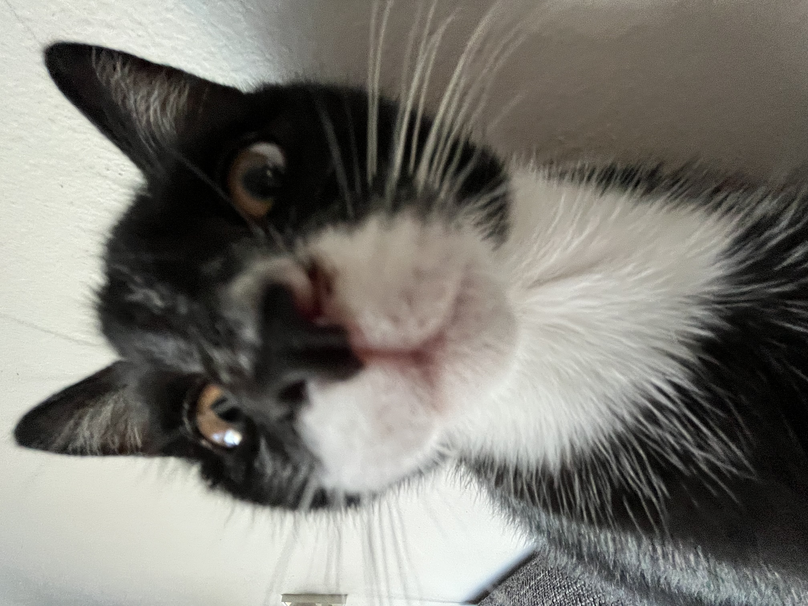
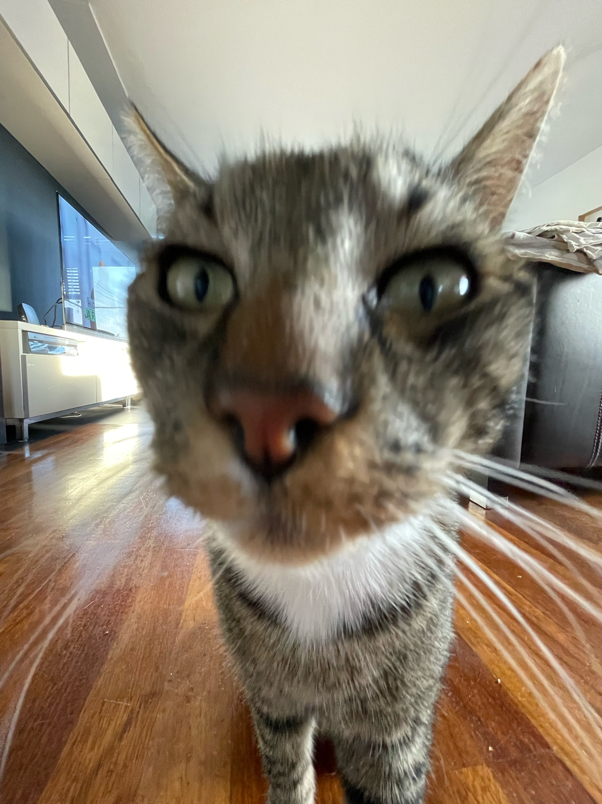

Dit is Snoes. Snoes is het nieuwste lid van de familie en moet nog een beetje haar plek weten. Wat ik wel weet is dat Snoes de schattigste is van de familie. Wil je meer te weten komen over Snoes? Klik dan
Maya's huisdieren
Welkom op mijn website over mijn huisdieren. Op deze website laat ik je zien welke huisdieren ik van baby af aan tot nu heb gehad.
Dit is Maui. Maui is de aardigste kater die je ooit hebt gezien (en de dikste). Wil je meer te weten komen over Maui? Klik dan
